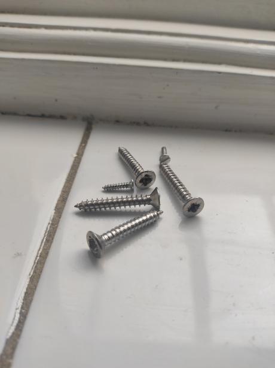

3. Screw
 A screw is a most commonly used simple machine to hold objects together, mainly objects such as wood and to position the objects. Often screws have a head on one end of it, the head is usually larger than the body. The other end is a sharp tip and is mainly used for drilling into wood, plastic, stone,etc.Its body shape is cylindrical with an inclined plane wrapped around. Screws change a gentle turning force into a strong forward force. They do this with a spiral pattern called a “thread” , which runs round and round the screw from the wide top to the narrow end. Each time the screw is turned, the thread pulls it a short distance along. The force required to move the screw forward is spread out all along the length of the thread.